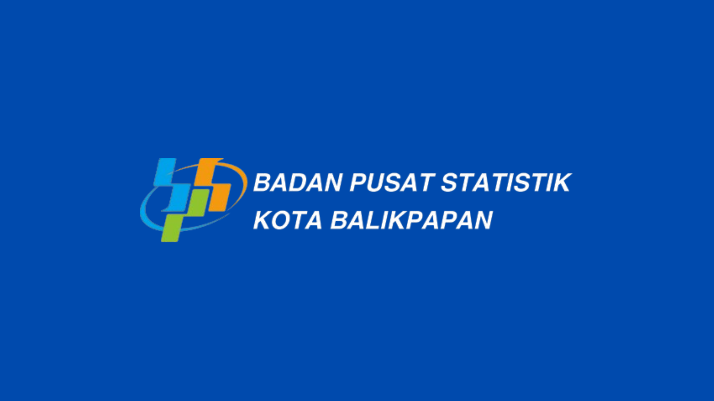
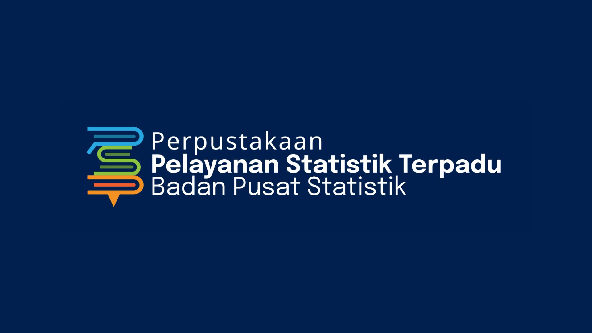
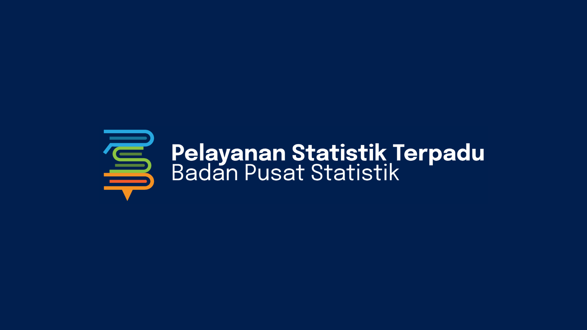
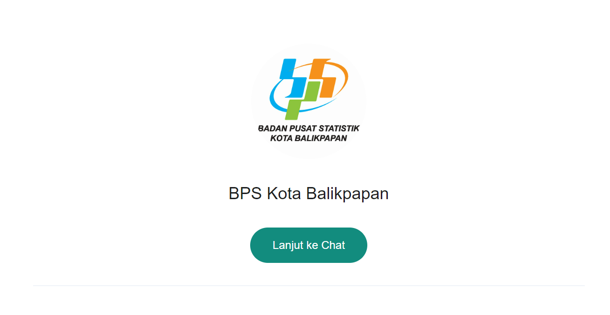
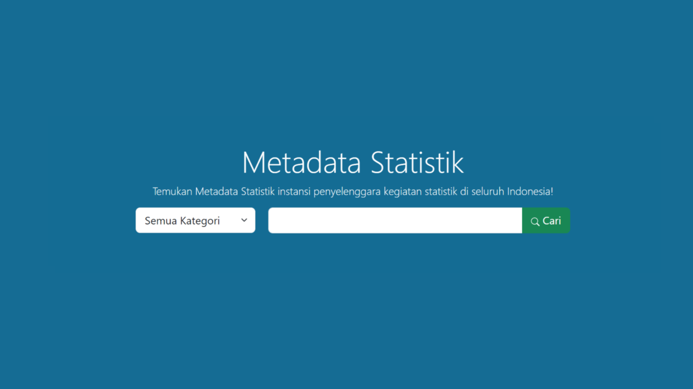
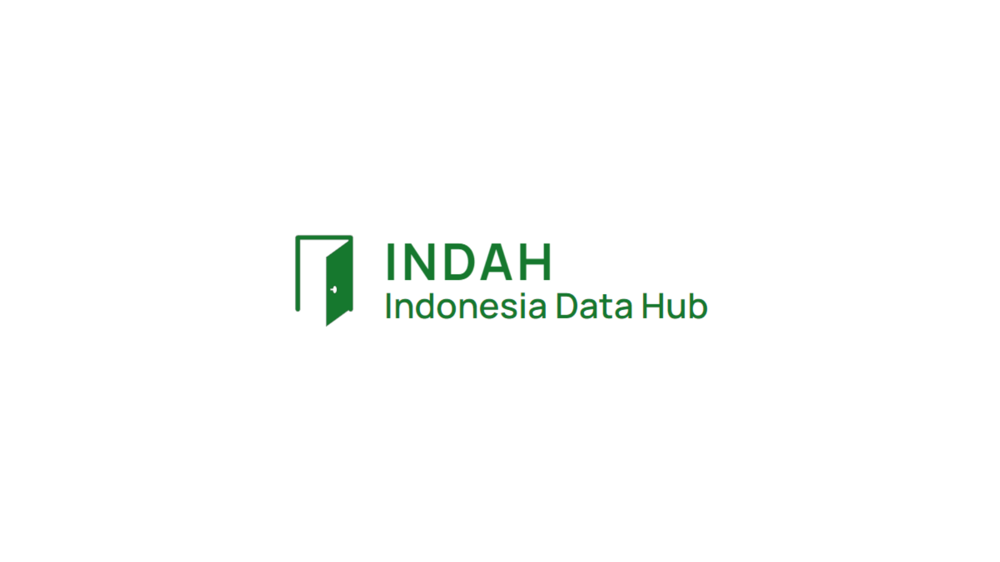

PELAYANAN PUBLIK
Layanan Diseminasi Statistik

Website BPS Kota Balikpapan
Website resmi BPS Kota Balikpapan yang menyediakan informasi statistik Kota Balikpapan yang bisa diakses melalui fitur Berita Resmi Statistik, Publikasi, dan Tabel Dinamis.
Web BPS

AllStats
Search Engine yang menyediakan akses ke berbagai macam produk statistik, berita resmi, indikator strategis, dan informasi lainnya yang termuat di website BPS seluruh indonesia dari level pusat hingga daerah.
AllStats

Layanan Permintaan Data dan Konsultasi Statistik
Sistem Informasi Layanan Statistik
Layanan BPS RI untuk membantu komunikasi antara pengguna data dan operator BPS dalam melakukan transaksi permintaan atau konsultasi data.
SILASTIK

WhatsApp BPS Kota Balikpapan
Layanan BPS Kota Balikpapan melalui media WhatsApp untuk permintaan data dan konsultasi statistik.
WhatsApp BPSLayanan Metadata dan Rekomendasi Statistik

Sistem Informasi Rujukan Statistik
Layanan informasi metadata statistik yang ada di Indonesia.
SIRUSA

Indonesia data hub
Layanan yang bertujuan untuk meningkatkan literasi data dan value of statistics serta mendukung interoperabilitas data dan kolaborasi eksplorasi terhadap data.
INDAHRekomendasi Statistik
Layanan bagi instansi pemerintah untuk mendapatkan rekomendasi penyelenggaraan kegiatan statistik sektoral dari BPS.
ROMANTIKLayanan Pengaduan
Lapor.go.id
Laporkan keluhan, saran, dan kritik mengenai pelanggaran yang dilakukan oleh pegawai BPS Kota Balikpapan melalui sistem Lapor.go.id yang dikelola oleh Kantor Staf Presiden
LAPOR